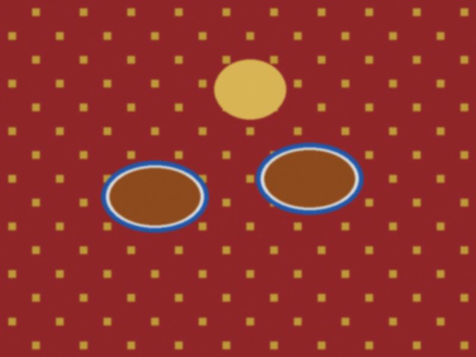
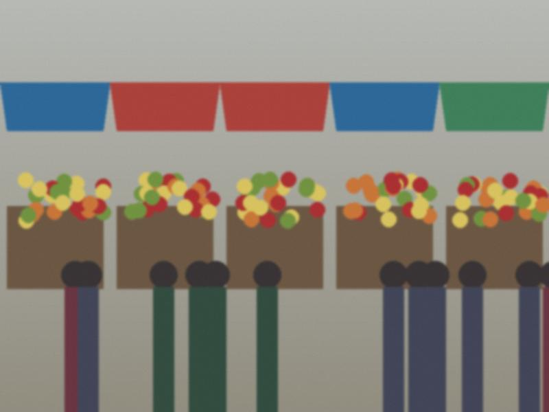
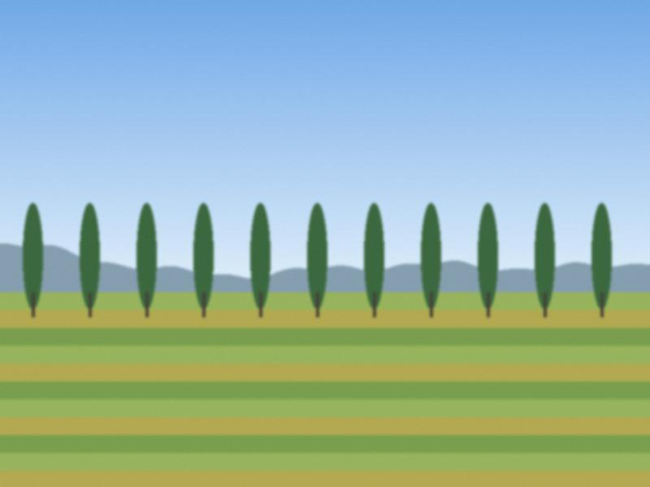
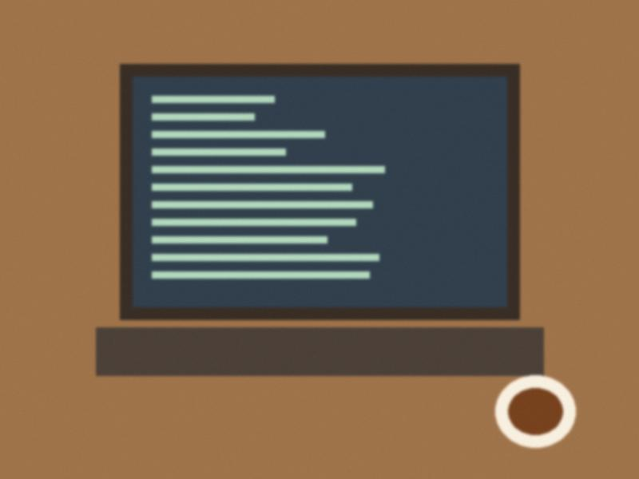

Another harvest
Autumn on the lower Chu, a thin year for money and a fat year for rice.

The door opens
On the 27th of June the network was opened again. On the 28th my daughter read the blog for the first time in two years.
Letters from Seoul
The segment is shut and the words come through the post: in e-mail, in pieces, from Vika.
Seventy-five
A small birthday, a big table and three video calls that did not come through.

The quiet line
Since October the blog has had two kinds of readers: those in Irad, and the others. The others cannot see it.
Vika came home
Nine days in December, a suitcase of Korean chili flakes and the best kimchi week of my life.
The directive
A short note about water and about a paper from the Zone's government.
The girl from the wolf video
My grandson showed me a dance. I understood nothing. Then I understood everything.
The canal in July
The summer of 2021: the lower Chu had half its water and the paddies had to choose.

What a grain of rice knows
A pensioner's lesson in how to store a harvest, in case the world requires it again.
Quarantine in the garden
Forty days at home, a vegetable garden and a message from Seoul every morning.

An app and a grandmother
Tulpar, the chat that all the grandchildren are on, and my first message in it.
Three bows
What we do at the graves, and why I do it even though I do not believe everything my mother believed.
Counted
In the 2018 census I was number 12 on the sheet for our house, and the census taker asked: "nationality?" I said, "Koryo-saram." She wrote it carefully.
Forty words of Korean
I am a Korean who cannot speak Korean, and thirty of my forty words are about food.
Chusok on the lower Chu
The harvest festival that began as a small gathering of rice farmers and now draws thousands of cars from Nurzhan.
A first birthday on a table of rice cake
When my granddaughter turned one, we put objects on a table and watched which one she touched first. We still do it, even in Almaty.

Counting Kims
One in five of us is called Kim, one in five is called Pak, and nobody can explain the system. Then who is who?
Thirty-eight harvests
From 1971 to 2009 I was the man who walked the paddies in August with a bag of seed samples. Some numbers I keep in my head.

The plov that should have been rice
Why Iradi plov is stirred like a risotto: a story about sticky rice that refused to be steamed.
Kimchi without napa cabbage
What do you do when the old recipe needs a cabbage that does not grow in your country? My mother invented Iradi kimchi in 1944.

The teacher who knew about water
Before there was rice on the Chu, there was a man with a ruler, and my grandfather carried his water.
The autumn of 1937
My mother was thirteen when the train took her from the Far East. She told me one thing about it, the same thing, forty times.

Why I am writing this
A retired agronomist, a daughter in Seoul who lent him a scanner, and a box of photographs nobody can name.
